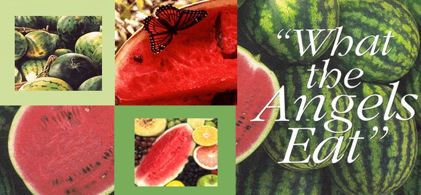
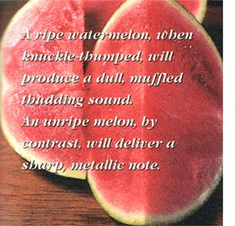
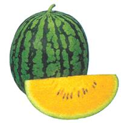
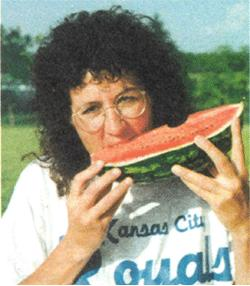
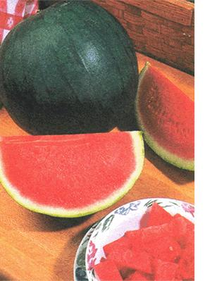
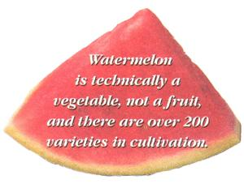
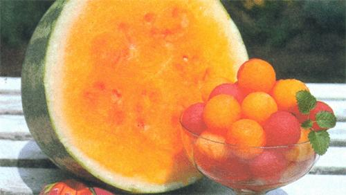
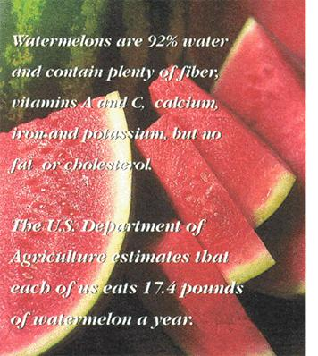
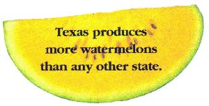

"What The Angels Eat"
How to grow watermelons plus recipes for watermelon ice, watermelon pickles and a melon bowl.
By Biz Fairchild Reynolds
June/July 1999
Later, I moved to the Midwest and this one of the first things I learned is that covered all around me those magical there is a method to the madness of con watermelon patches I'd imagined: summing all the watermelons you Arkansas melon farms; irrigated fields of can when you can. Watermelons can't melons in Colorado; watermelons ripen be canned or dried like other fruits, in the foothills of Missouri. People which makes eating your fill and sharing even grew melons in their own back the rest the order of harvest day. It all yards! Right away, I bought a 49C packet helps advance the mythic status of the of seeds (this was a while ago) and was melon, though, as no other fruit comes on my way to "watermeloning." close to capturing a season so perfectly.
What to Plant
-----------------
Practically every garden catalog offers several varieties of watermelon. I counted more than 30 in my half-dozen catalogs alone. There's a melon for everyone: bush and midgets for small gardeners; vines that produce icebox, picnic and family sized melons; melons with skin tones ranging from green gray to green striped to yellow, with centers of red, pink, white and yellow. There are seedy and seedless varieties, and melons shaped round, oval, long or thin. And each catalog description contains such tantalizing adjectives as "mouthwatering," "sweet," "juicy" and "delicious" everything a watermelon is supposed to be!
Seed prices range considerably I've seen everything from $3.55 per 1/2 ounce to $2.75 per ounce-depending on the catalog and melon variety. Buy your seeds from a company whose service and quality you've come to trust. Selecting Seeds
-----------------
To find a melon suited to your particular growing season, read the fine print in your catalogs. I think the reason we never grew melons when I was a kid was that Pennsylvania summers just aren't as long and hot as Midwestern summers. But that need not stop northern gardeners. Several varieties have been developed that require a much shorter growing season. Northern gardeners can also get a jump on their season by starting plants indoors (see "Growing Melons," below).
Short season varieties include Sugar Baby, which is listed in every one of my catalogs, a testament to its popularity. Taking only 70 days from seed to ripe fruit, this melon is round, dark green and weighs eight to 12 pounds thus, an icebox variety. Yellow Doll, an All-America Gold winner and about the earliest melon you can grow, ripens in 65 days, weighs only six to eight pounds and has an attractive variegated green-striped skin. Park's Honey Red produces round, seedless, eight inch melons in only 65 days.
Space saver varieties are bush type plants that can be grown as close as two and-a-half feet apart. Park's Garden Baby Hybrid grows into a mere four- or five foot compact vine and produces melons in only 75 days. Gurney's Bush jubilee takes only a third the growing space of regular melons, but produces 13pound green-striped fruits-the largest found on a bush-type plant.
Long-season melon varieties, as you might expect, provide a bigger fruit. Gurney's Cobb Gem produces melons of up to 130 pounds in 100 days! A market variety weighing 35 to 40 pounds, Rattlesnake (Gurney's) ripens in 90 days. Charleston, a popular variety sold by several seed companies, is said to never have a "hollow heart," regardless of drought or heat of summer. It also resists sunburn. Taking 85 days to mature,the ripened fruits weigh about 30 pounds.
Yellow-fleshed varieties (not my favorite but good conversation starters!) include Hybrid Yellow Doll, a crisp, startlingly yellow-fleshed, round striped melon weighing five to eight pounds, and a very similar All America winner, New Queen Hybrid (Park), which boasts an "enchanting orange flesh." Tender sweet matures in 90 days, has a yellow-orange flesh, a high sugar content and weighs as much as 30 pounds. And new this year in Jung's seed catalog is Cream of Saskatchewan, a five to 12-pound melon with creamy white flesh that when spooned into a bowl looks like chunks of ice cream. This I've got to try! (There is also a yellow-skinned variety, Golden Crown, with red flesh and small seeds.)
Seedless varieties were first developed by Japanese breeders, and several types are now available, including Fields' Hybrid Sweet Caroline and Jung's Sweetheart Hybrid. Seed companies routinely include a few free Sugar Baby seeds with orders for seedless varieties and suggest planting one hill of seeded melons for every two or three hills of seedless melons for cross, pollination purposes. Make sure the seedless hills are marked for identification, as the plants will appear identical to other melon plants.
‹ Biz bites into a sumptuousslice of watermelon
Growing Watermelons
-----------------
Melon seeds consist of a large case with a soft center, easily damaged and crushed during shipping and Yellow Baby from Park Seed Co. handling. Even undamaged, the seeds do not sprout as easily as other plants in the e vegetable kingdom. So handle with care.
Research has shown that soaking water melon seeds for 20 hours in water before planting increases the chances of successful germination, even when the test soil was a chilly 55°F to 65°E Another soaking suggestion is to leave the seeds in lukewarm tea for two hours, then spread them on an old tea soaked towel. Fold the towel and keep it in a plastic bag at 70°F for one week. The seeds will sprout easily, after which you can transfer them into the garden.
It's foolish to try to plant your melon seeds before the soil warms up. Seeds will rot, and transplanted seedlings will sulk. Plant melons only when danger of frost is past and the soil is very warm.
On the other hand, melon plants must be started as early as possible so that the fruits aren't forced to ripen after cool weather has set in. Plant too late and your melons will be only fair in flavor. Northern gardeners should start seeds indoors, three to four weeks before their area's outdoor planting date.
If starting the seeds indoors, plant in individual pots. Plant two seeds la cutting the undesirable one off later. Use peat pots for easy transplanting when the time comes. If using plastic pots, transplant by dampening the soil and dumping out the entire root ball, being careful to inflict minimal trauma on the plant.
Transplant seedlings to the garden when the first true leaves unfold, and when daytime temperatures are at least 65°F. Set the plants a half-inch deeper than they were in their pots. Water gently. With pampering, the young melon plants will rarely wilt.
You may want to prepare your melon bed with black plastic before setting out transplants (see "Mulch"). Cover the soil with it and bury the edges against the wind. This will bring the soil temperature to 85°F by planting time, ideal for melon seedlings. Punch holes in the plastic, four to six feet apart, plant the seedlings and water them with transplant solution if you choose. If temperatures turn cool after the seedlings have been set out, cover the plants with hot caps, which can be handmade from plastic milk cartons.
There is one potential downside to starting melon seeds indoors and that is the quick growth of the seedlings. The long taproot growing in a pot will soon become inhibited and will consequently develop a fibrous root system thus needing more water for the rest of the summer.
When planting seeds directly into the garden, bury five or six seeds per hill, two to three feet apart, with hills six to eight feet apart. Cover seeds with a half MOTHERS staff favorite: Seedless Sugar Baby.inch of fine soil. Later, after the seedlings are well established, thin to two or three plants per hill. Remove tall, spindly or bug-damaged seedlings.
Why is it traditional to plant melon seeds on hills? The sun warms the elevated soil, which has more surface area than does a flat expanse of soil. However, hill-planting requires closer attention to watering. Here in the Midwest, I skip billing and plant all vine crops in little troughs formed with my hoe point.
Growing melons on a fence keeps the vines from roaming, keeps fruit clean and slug-free and decreases field mouse damage. Air circulation is also increased, as is the amount of sunshine the melons receive. You may want to support fence grown melons with slings of mesh material-nylons, onion sacks, etc - so that the thin stems won't have to bear the full weight of the fruits. If you are growing the very large varieties, this method may be neither practical nor successful.
Mulch
-----------------
Most every gardener will agree that mulching garden plants is beneficial. Heat loving plants, such as melons, will do well with black plastic mulch, which absorbs the sun's rays and warms the soil, raising temperatures by as much as 6%. Mulch eliminates weeds, too.
Straw or hay mulches are also recommended, and should be put down after the soil has been dampened, then spread to the base of the plant vines. Flat rocks may also be used as a mulch, as they heat up during the day and slowly radiate stored warmth back into the soil at night. If using this method, leave a six-inch diameter of open soil around the plant stem to allow water to reach the roots.
Fertilizer
-----------------
Use slow-release fertilizers for slow maturing plants such as watermelons. Slow release fertilizers are coated with a water-permeable substance so that nutrients are released slowly over several months. Fertilize well, as melons are heavy feeders. Don't use poultry manure on melon plants unless you fertilize in the fall, thereby allowing some of the concentrated salts to leach out before spring planting.
Melon plants double in size during the hot month of July, and this speedy growth may leave foliage pale. Spray them with a water soluble fertilizer to give the plants a quick boost.
Soil
-----------------
Watermelons need rich, porous soil located in full sun. The pH should be 6 to 6.5. Taproots can grow an inch per day and eventually reach four feet in length. Lateral roots may extend even farther than do the vines. Loose soil is necessary for this rampant growth to take place. Also, heavy soils lead to fruit with inferior flavor.
Water
-----------------
Lack of water may produce misshapen melons or no fruit at all. Watermelons are made up of a large percentage of H20, as are tomatoes and cucumbers, and need plenty of rain or artificial watering. But hold back on watering once the melons start to ripen to promote greater sweetness.
Flowering
-----------------
Why are there so many flowers on a melon plant but comparatively few fruits? The male flowers, which usually appear first, will not fruit. Also, each particular plant "knows" just what it can do, and limits its production in accordance with the amount of water, fertilizer, etc., it is receiving. Most watermelon plants will produce three to four good melons. By thinning blooms and small fruits, you can encourage the plant to produce bigger melons if that is important to you. Some gardeners claim that small watermelons taste best and that large ones often fail to ripen completely.
Ripening
-----------------
Melons do well in high humidity and extreme heat. Heat speeds ripening, so place young fruits on bricks, boards or coffee cans sunk halfway into the ground. This will add heat and speed the fruit's progress by at least a week. Elevating the melons will also protect them from slugs and from dampness, which may cause rotting.
Seed Saving
-----------------
On a trip south to see the Smokies, my mother remembers her father slowing down and pulling over at an "ALL THE WATERMELON You CAN EATFREE!" sign along the road. Indeed, customers were encouraged to gorge themselves on as many watermelon slices as possible (and to add further encouragement, only the juiciest melon "hearts" were offered). The only requirement was that all seeds be spit into a cup, which the farmer kept for the following year's seed.
Save seed from the biggest and best fruits. Wash, dry carefully on paper towels and save in an airtight container in the refrigerator until next spring. Keeping melon seeds cool and dry is of utmost importance.
Common Problems
-----------------
Compare watermelon varieties in your seed catalog to discover which are disease and wilt resistant (see "Disease Chart. page 38). Other problems your watermelons may encounter are mouse nibbling (keeping the patch as weed free as possible may help), sunburn (draping lightweight sheet material over the fruits protects the skins-many folks do the same for tomatoes in this area) and failure to ripen, due to a lack of hot, sunny weather, which. Unfortunately, you can do nothing about
Is It Ripe?
Determining die exact day that a watermelon is ripe to perfection is difficult. Rich soils delay maturity, as do cool, wet conditions, Also. there are verve few external changes in size or color to reveal the melon's ripeness. Here are some general tips to help you decide if your melon is ready for picking (and melons actually ripened on the vine are the best!):
•The little "pig tail" curl at the point of attachment turns brown and dries up although in some varieties, it dries up a week before the melon is actually ripe.
•The "ground spot" (where the melon touches the ground) turns a light straw or yellow color (instead of white).
•The melon's surface takes on a rough, slightly ridged feeling.
•The fruit produces a dull, muffled thudding sound when thumped, rather than a sharp or metallic one. According to Mark Twain, a green melon says "pink" or "pank" when knuckle-thumped, while a ripe one says "punk." A dull, dead sound may also signal over ripeness.
At Last, the Harvest
Never pull a melon free from its vine. Always cut it off, leaving a short stem. Be careful not to damage leaves or stems while walking among the melons. Nutrients need to reach the fruits through these fragile plant parts, and the leaves are constantly making food for the rapidly developing melons.
Photos: STOCK MARKET
Check watermelons for ripeness in the morning before they get warm. Eat the melon as soon as possible but who can keep one around for very long, anyway?
If kept in cold storage, a melon will lose its red color. Kept at room temperature, the color intensifies. Watermelons can be stored for one to two weeks if kept at 40 to 45 degrees.
Recipes
Watermelon lce
1 4- pound wedge of watermelon
3 tablespoons confectioners sugar
1 tablespoon lemon juice
1 teaspoon salt
Cut peeled, seeded melon into bite-size chunks to make six cups. Blend a third of the melon with the sugar, lemon juice and salt until smooth. Pour mixture into a 9" x 9" baking pan. Blend remaining melon chunks until smooth; stir into mixture in pan. Freeze until partially frozen, about two hours. Spoon melon mixture into large, chilled bowl. With mixer on medium speed, beat until fluffy but still frozen. Return mixture to pan. Cover and freeze until firm-about one and a half hours.
Watermelon Pickles 2 pounds watermelon rind
1/4 cup granulated pickling salt
2 cups sugar
1 cup white vinegar
1 tablespoon broken cinnamon stick 1'l teaspoon cloves lemon, thinly sliced
Trim green and pink parts from rind and cut into one-inch cubes. Measure six cups. Soak overnight in solution of salt and one quart water, or enough to cover. Drain, rinse and cover with cold water. Cook 25 minutes or until just tender.
Combine sugar, vinegar, one cup water and spices. Simmer ten minutes. Strain. Add drained rind and lemon. Simmer, covered, about 15 minutes or until rind is clear.
Fill hot jars with rind and syrup, leaving half-inch head space. Adjust lids, process in boiling-water bath five minutes. Makes four half-pints.
Melon Bowl
1 medium ad watermelon (about 20 lbs.
1 small cantaloupe (about 3 lbs.
2 small honeydew melon (about 4 lbs.
Ginger ale
Cut watermelon lengthwise, removing top third to use another day. Scoop out pulp from remaining melon, cutting into bite-size pieces. Cut scalloped pattern around rim of watermelon. Also, slice a thin piece of rind from bottom of shell so that shell stands level.
Cut other melons into bite-size chunks and place all melon pieces into watermelon shell. Cover and refrigerate.
To serve, spoon melon chunks into bowl and pour V4 cup ginger ale over each serving of fruit. Makes about 10 dessert servings.
‹ Photo:KATRIN BODYIKOGLU
Disease Chart
›Anthracnose: The worst disease afflicting melon plants, symptoms include round, gray sunken spots on the fruit. Don't work in the patch while vines are wilted to avoid spreading the disease. Eliminate weeds and increase air circulation to reduce moisture on leaves and discourage spore germination and infection.
›Wilt: This fusarium fungus causes vines to wilt and brown streaks to form on the stems. The plants eventually turn brown. This disease lives on in the soil for . up to 16 years, so moving your patch to a different area of the garden may be they only "cure." Destroy every bit of the infected plants, even the roots.
›Downy Mildew: This is first noticed as a powdery film on the plant's foliage. Rainy weather may exacerbate the problem. Pull out any diseased vines and try to increase air circulation among those remaining.
›Blossom End Rot: This is caused by excessive moisture and high temperature Applying mulch or straw around the vines and fruit may help.
›Pests: Cucumber beetles, which carry bacterial wilt, first attack seedlings as they are pushing out of the ground. Late planting may help you to avoid the worst of the beetle damage. You can also cover young seedlings with glass Tars and later with screen boxes or netting of some kind. The netting can remain in place until plants begin to bloom, then must be removed to allow for pollination.
 Photos: KATRIN BODYIKOGLU Mother's staff favorite: Seedless Sugar Baby |
 Photo: COURTESY OF PARK SEEDCO. 800-845-3369 Melon Lovers bask in the glow of Orange Sunshine. |
Photo: YELLOW BABY FROM PARK SEED CO. |
|
 Photo: COURTESY OF W. ATLEE BURPEE 800-888-1444 |
 Photo: STOCK MARKET |
 Photo:KATRIN BODYIKOGLU |
|
 Photo: COURTESY OF W. ATLEE BURPEE 800-888-1444 |
Photo:KATRIN BODYIKOGLU |
 |
|
 |
 |
 |
|
|
|
|